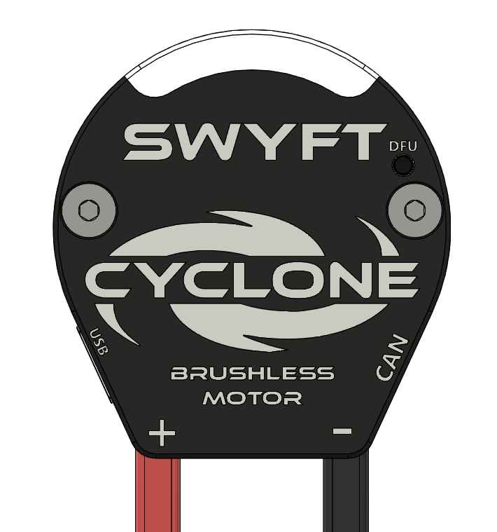
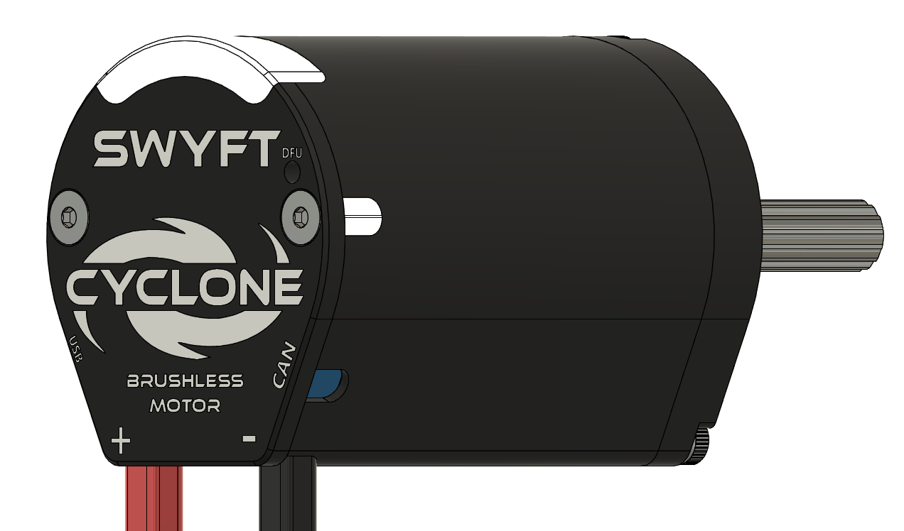

Wiring
Power, CAN FD, and USB-C all connect at the back of the motor.

Connections
| Connection | What it is |
|---|---|
| Power leads | Bus positive (red) and negative (black), out the bottom of the cover |
| CAN | CAN FD — CAN H and CAN L |
| USB-C | Full control, configuration, telemetry, and firmware |
| DFU pinhole | Firmware-recovery button, beside a power LED. Firmware & DFU |
| Status window | Seven lights; the two ends report controller state. Status lights |
Power
Wire the leads to bus positive and negative — red to positive, black to negative. The Cyclone operates from 6 to 24 V; it will not arm below 6 V and cuts output above 24 V. Size the branch breaker and wire gauge to the supply current the mechanism draws, and set the supply limit to match.
The small LED beside the DFU pinhole is lit whenever bus power is present. It is a power indicator, not a status code. If that LED and both end lights are dark, the motor has no power — check the leads and the breaker before looking at CAN or code.
Confirm polarity before the first enable: red to positive, black to negative, checked against your harness.
CAN FD

Crimp CAN H and CAN L to the same conductors as the rest of the bus; reversing them stops communication. Give each Cyclone a unique device number (CAN ID) from 1 to 62. Two devices sharing a number will not run, and the end lights show blue. Status lights
Terminate the CAN trunk at its two ends, not at the motor. A bus with no end terminators can look like a motor that will not talk.
USB-C

USB-C is a full control path — configuration, telemetry, firmware, and output — and enumerates as a standard serial device, with no driver to install. Open SWYFT Link in a browser and connect this port. Anything you can do over CAN you can do over USB-C, and the reverse. Command a motor from one place at a time.
Before you enable
- Motor held or mounted with the shaft free. Mounting
- Power leads on the correct polarity; the DFU-adjacent LED is lit.
- On CAN: H and L match the bus, the trunk is terminated at both ends, and the device number is unique.
- Current limits set for the mechanism. Current limits